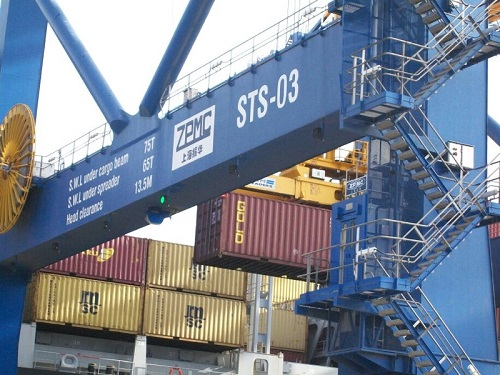

From the website to the living room
How does your favorite piece of furniture get to your home? Get familiar with the particular steps of the journey.
From raw material to solid furniture
-
It all begins in distant India, where a small sprout struggles through the
earth on a plantation and grows into a majestic tree, the natural material of
our solid furniture. Our woods come from plantations e.g. in Rajasthan and the
neighboring states of Uttar Pradesh, Madhya Pradesh, Punjab, Haryana, and the
Gujra by the sea.
-
Lumbermen load the raw logs onto trucks and then drivers sometimes transport
them hundreds of kilometers over dusty roads and mountainous terrain to the
sawmill near the respective production site, e.g. to Jodhpur, where craftsmen
make our colonial style program OXFORD.

-
Here, sawmill workers cut the raw wood into boards of various thicknesses and
lengths. Dried planks are ready to go to production.

-
We're now in a workshop in Jodhpur. Orders come in all the time. Different
furniture series and new designs emerge, there are reorders for series that are
already in progress. Vendor provides coordination of everything in the process
and combination with one another. The paintwork is still missing here, the
ordered tables are waiting for their packaging.

-
Workers load everything into the container, mostly without pallets, to fully
utilize the space down to the last corner.

-
When everything is in place and nothing wobbles, our agent can seal the doors,
and now the journey really begins.

-
In a well-rehearsed rhythm, the furniture loads leave the place of manufacture
and find themselves in the port of Mundra, which is over 600 km away. Now the
container goes on the ship and directly to the port of Hamburg. From there,
after few days his next stop is the harbor in Gdynia. Before our forwarding
company will receive the containers here, customs first have the pleasure. After
the necessary paperwork, the truck takes the load to our warehouse in the town
of Bochnia near Krakow, Lesser Poland.

-
With the last breath, your favorite piece is now getting ready for the last
part of the more than 9,000 km long journey. On such a long journey, of course,
disabilities can arise over which one has little control. The monsoons or other
violent weather conditions make routes difficult to access and some transport
falls into the water.

- With the address label and known destination, the transport company ensures a safe and agreed delivery. It finally arrived, all that remains is to unpack.
Notice: Certain lengths of
wood may be currently difficult to grasp for production or that no containers
are available. Ships have already been overbooked, which again leads to new
waiting times. In addition, there are only 1 to 2 loading days per week in
Mundra, so you've to queue at the back if you arrived too late. Again and again,
there are controls and visual inspections by the authorities in India, just like
in Poland, and that too takes time.
Note: Incidentally, there's no work on holidays
such as Holy and Diwali in India, but these we can at least predict.